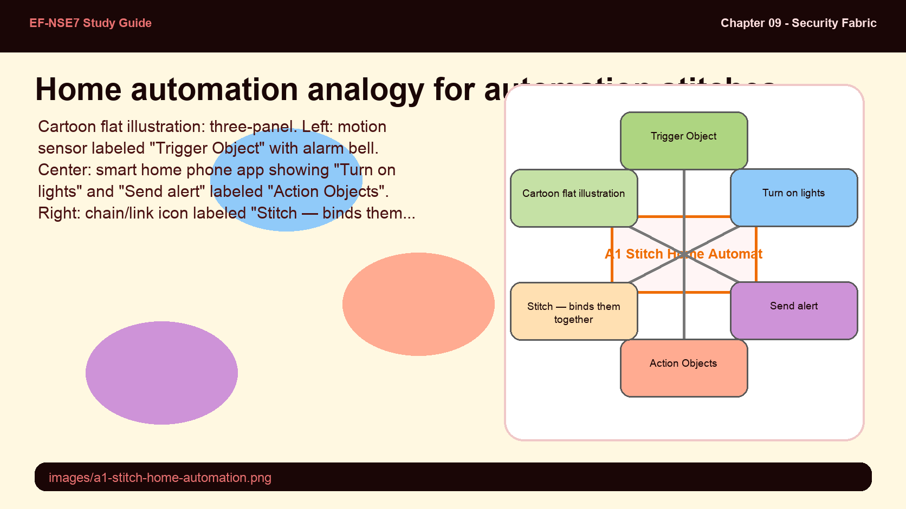
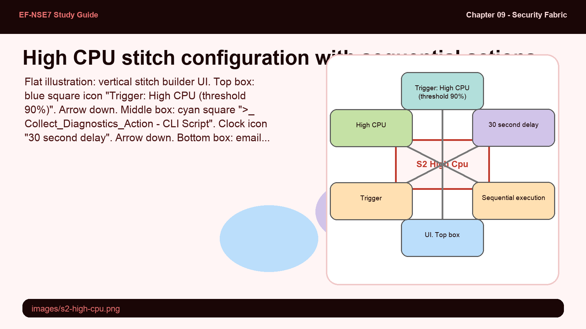
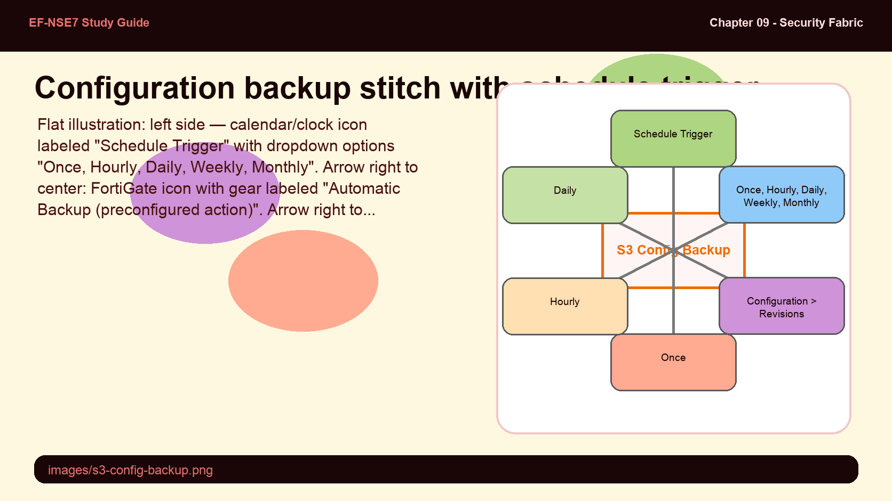
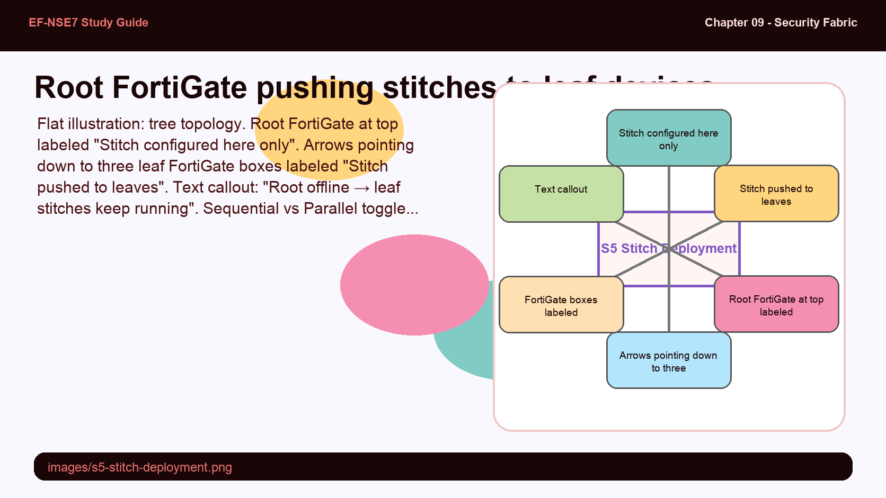

Trigger-action workflows that make the Security Fabric self-healing — high CPU responses, config backups, IoC quarantine, and the three-step creation sequence every exam tests.
A stitch is if/then logic that runs at machine speed.
Mastering the trigger → action → stitch creation sequence, the %%results%% variable, and the key use cases (high CPU, scheduled backup, IoC quarantine) covers the automation questions on the EF-NSE7 exam.
💭THINK FIRST · AUTOMATION STITCH OVERVIEW
Automation stitches use if/then logic — a trigger event fires one or more actions. The creation sequence matters: you must configure the trigger and action objects first, then assemble them into a stitch. This order isn't arbitrary; it's because the stitch object references the trigger and action by name. Getting this sequence wrong is a common exam trap.
Why must you create the trigger and action objects before creating the stitch itself — what would happen if you tried to create the stitch first?
Is the Security Fabric a prerequisite for using automation stitches? Explain the actual requirement.
Q1 — MODEL ANSWER
The stitch object is an assembly that references specific trigger and action objects by name. If those objects don't exist yet, the stitch has nothing to reference. You would either get a validation error or be forced to select from an empty list. The three-step sequence (trigger → action → stitch) is enforced by the GUI and CLI.
Q2 — MODEL ANSWER
No — the Security Fabric is not required. Stitches can be configured on any FortiGate device independently. However, if you do configure stitches within the Security Fabric, they must be configured on the root FortiGate and are pushed to relevant leaf devices. The Security Fabric enables Fabric-wide stitch distribution, not the stitches themselves.
Flat illustration: three sequential boxes connected by right-facing arrows. Box 1 (blue): lightning bolt icon labeled "Trigger — define the event condition". Box 2 (teal): gear icon labeled "Action — define the response". Box 3 (coral): chain link icon labeled "Stitch — bind trigger to action". Labels below each box: "Security Fabric > Automation > Trigger", "Security Fabric > Automation > Action", "Security Fabric > Automation > Stitch". Pastel palette, bold outlines, no shadows.
Automation stitches (also called automated workflows) use if/then logic to cause FortiOS to automatically respond to an event in a preprogrammed way. Each stitch pairs one trigger with one or more actions. The stitch monitors your network and takes appropriate action when the Security Fabric detects a threat or other actionable event.
The creation sequence is mandatory and must be followed in order:
Configure the Trigger — define what event or condition fires the stitch
Configure the Action(s) — define what FortiOS does when triggered
Configure the Stitch — assemble the trigger and action(s) into a named workflow
The Security Fabric is not required to use stitches — any standalone FortiGate can configure them. However, if stitches are configured within the Security Fabric, they must be configured on the root FortiGate. Root FortiGate stitches are pushed to relevant leaf FortiGate devices. Leaf devices continue running previously configured stitches even if the root goes offline.
Exam tip: Stitches configured on the root FortiGate are pushed to leaf devices. The root does NOT need to be operational for previously pushed stitches to function on leaf devices.
🧠
MENTAL NOTE
Creation order: Trigger → Action → Stitch (in that sequence only). Security Fabric is NOT required. In Fabric deployments: root FortiGate only, pushed to leaves. Root going offline doesn't break leaf stitches. Located at Security Fabric > Automation.
Analogy
An automation stitch works like a home automation rule: "IF the motion sensor triggers at 2am THEN turn on the lights and send me an alert" — two independently configured components assembled into one rule.
Trigger object — the motion sensor rule (pre-wired independently before the automation rule is built)
Action object — the individual smart device commands (lights on, send alert — each configured separately)
Stitch — the automation rule that binds the sensor to the commands into a single if/then workflow
Sequential execution — the lights turn on first, then (after a delay) the alert is sent — not simultaneously

📷 images/a1-stitch-home-automation.png — add this image to the folder
Cartoon flat illustration: three-panel. Left: motion sensor labeled "Trigger Object" with alarm bell. Center: smart home phone app showing "Turn on lights" and "Send alert" labeled "Action Objects". Right: chain/link icon labeled "Stitch — binds them together". Below: timeline showing "Motion detected → lights ON → 30s delay → alert sent". Pastel palette, bold outlines, no shadows, educational style.
ASK A QUESTION
ADD A NOTE
💭THINK FIRST · HIGH CPU USE CASE
The High CPU stitch is the primary example in the study guide. It demonstrates sequential action execution — and it shows why a time delay between actions matters. The %%results%% variable is the key detail that links one action's output to another action's input.
Why is a 30-second delay inserted between the CLI script action and the email action in the High CPU stitch?
What does the %%results%% parameter do, and which action in the High CPU stitch uses it?
Q1 — MODEL ANSWER
The CLI script action (Collect_Diagnostics_Action) runs a series of diagnostic commands that take time to complete. The 30-second delay ensures all diagnostic output is collected before the email action (Email_Diagnostics_Action) fires — otherwise the email body would contain incomplete or empty results. Sequential execution with a delay ensures the first action's output is available to the second.
Q2 — MODEL ANSWER
%%results%% is a template variable that is replaced at runtime with the output of the preceding action in a sequential stitch. In the High CPU stitch, the Email_Diagnostics_Action uses %%results%% in the email body — it is substituted with the diagnostic command output from Collect_Diagnostics_Action, giving NOC staff the troubleshooting data they need in the same email.
SECTION 02
Use Case 1 — High CPU Scenario and CLI Scripts

images/s2-high-cpu.png
High CPU stitch: Trigger (High CPU) → Action 1 (CLI diagnostic script) → 30s delay → Action 2 (email with %%results%%).
Flat illustration: vertical stitch builder UI. Top box: blue square icon "Trigger: High CPU (threshold 90%)". Arrow down. Middle box: cyan square ">_ Collect_Diagnostics_Action - CLI Script". Clock icon "30 second delay". Arrow down. Bottom box: email icon "Email_Diagnostics_Action - sends output via %%results%%". Text label "Sequential execution". Pastel palette, bold outlines, no shadows.
The High CPU use case demonstrates the full trigger → action → stitch workflow. The recommended preconfigured trigger is High CPU — it fires when FortiGate exceeds the CPU use threshold defined by the cpu-use-threshold parameter (default: 90%).
FortiGate CLI — Set CPU Threshold
config system global
set cpu-use-threshold 90
end
Two custom actions are created for this stitch. Collect_Diagnostics_Action is a CLI Script action that runs diagnostic commands (get system status, get system performance status, diagnose sys top 5 20 2) to gather performance data. Email_Diagnostics_Action sends an email notification to NOC staff.
The stitch uses Sequential action execution mode (not Parallel). A 30-second delay is inserted between the two actions to allow diagnostic commands to complete. The email body uses the %%results%% parameter, which is substituted at runtime with the output of Collect_Diagnostics_Action — delivering the relevant diagnostics in the same email without any manual steps.
Exam tip: The default cpu-use-threshold is 90%. The %%results%% variable passes the output of a preceding sequential action into a later action's parameter (like an email body). It only works in sequential mode, not parallel.
🧠
MENTAL NOTE
High CPU trigger default = 90% (cpu-use-threshold). Sequential: CLI script → 30s delay → email. %%results%% = runtime substitution of previous action's output into next action's parameter. Sequential mode required for %%results%% to work.
ASK A QUESTION
ADD A NOTE
💭THINK FIRST · CONFIGURATION BACKUP
Configuration backup is an example of time-triggered automation — not event-triggered. The Schedule trigger uses an external time condition to fire a stitch rather than waiting for a FortiGate-detected event. The preconfigured "Automatic Backup" action makes this a particularly simple two-step stitch with high practical value.
How does the Schedule trigger differ from event-based triggers like High CPU, in terms of what initiates the stitch?
Where would you find evidence that a backup stitch ran successfully, and what information does that record contain?
Q1 — MODEL ANSWER
The Schedule trigger is time-driven — it fires at a specified frequency (once, hourly, daily, weekly, or monthly) using the time system of the root FortiGate. Event-based triggers like High CPU are condition-driven — they fire when a monitored metric crosses a threshold. The distinction is external event vs. internal condition.
Q2 — MODEL ANSWER
Successful backup runs appear in Configuration > Revisions. Each entry records the timestamp, the administrator account (daemon_admin for stitch-initiated backups), and the backup trigger description (e.g., "Autod backup config by stitch: Backup_Stitch"). You can use any revision to roll back the FortiGate configuration.
SECTION 03
Use Case 2 — Configuration Backup With Automation

images/s3-config-backup.png
Schedule trigger (once/hourly/daily/weekly/monthly) → Automatic Backup action → result recorded in Configuration > Revisions.
Flat illustration: left side — calendar/clock icon labeled "Schedule Trigger" with dropdown options "Once, Hourly, Daily, Weekly, Monthly". Arrow right to center: FortiGate icon with gear labeled "Automatic Backup (preconfigured action)". Arrow right to: document stack icon labeled "Configuration > Revisions" with timestamp "daemon_admin 2025/03/08 Autod backup by stitch". Pastel palette, bold outlines, no shadows.
An external event — specifically the passage of time — can also trigger a stitch. The Schedule trigger fires a stitch at a defined frequency: once, hourly, daily, weekly, or monthly, based on the root FortiGate's time system. This is the basis for automated, regular configuration backups.
The action used in this stitch is the preconfigured Automatic Backup action, which is built into FortiOS. No custom script is required — you simply create the stitch, bind the Schedule trigger to the Automatic Backup action, and specify which FortiGate devices in the Security Fabric should be backed up (all FortiGates or a specific subset).
When the stitch fires, the result is recorded in Configuration > Revisions. Each revision entry shows the timestamp, the account (daemon_admin for stitch-triggered backups), and the stitch name. These revisions can be used to roll back the FortiGate configuration to any saved point.
Note: Schedule frequency options: once, hourly, daily, weekly, or monthly. The frequency menu changes based on selection (e.g., "Once" requires a specific date/time; "Daily" requires a time of day).
🧠
MENTAL NOTE
Schedule trigger = time-driven (once/hourly/daily/weekly/monthly). Automatic Backup = preconfigured action, no scripting needed. Results visible at Configuration > Revisions. Stitch-initiated entries show daemon_admin as the account. Revisions enable config rollback.
ASK A QUESTION
ADD A NOTE
💭THINK FIRST · IOC QUARANTINE
The IoC quarantine use case shows the full Security Fabric potential: multiple products working together to quarantine a compromised endpoint automatically, faster than any human could respond. The five-step flow is precisely ordered and frequently appears in scenario-based exam questions. A platform limitation exists here that examiners sometimes test.
Walk through the five steps of the IoC detection and quarantine flow — which device initiates the quarantine command to the endpoint?
What platform limitation applies to the automated quarantine feature, and why does it matter for deployment planning?
Q1 — MODEL ANSWER
Step 1: FortiClient detects a malicious site and sends a log to FortiAnalyzer. Step 2: FortiAnalyzer discovers IoCs in the logs and notifies FortiGate. Step 3: FortiGate verifies the endpoint is connected and sends a quarantine notification to FortiClient EMS. Step 4: EMS sends the quarantine command to the endpoint (FortiClient). Step 5: The endpoint quarantines itself, blocking all traffic, and notifies both FortiGate and EMS. FortiClient EMS sends the actual quarantine command — not FortiGate directly.
Q2 — MODEL ANSWER
Automated IoC quarantine is not supported on FortiClient (Linux). This matters for organizations with Linux endpoints in their environment — they cannot rely on this feature for Linux-based devices and would need an alternative remediation workflow. The stitch and detection still work, but the quarantine action on a Linux endpoint would fail silently.
SECTION 04
Use Case 3 — IoC Detection and Automated Quarantine
Flat illustration: circular numbered flow. (1) Laptop labeled "FortiClient" with malicious site detected, sends log arrow. (2) FortiAnalyzer icon "discovers IoC, notifies FortiGate". (3) FortiGate "verifies endpoint, sends quarantine request to EMS". (4) FortiClient EMS "sends quarantine command to endpoint". (5) Laptop with red X "endpoint quarantines itself, blocks all traffic". Center: "FortiGate + FortiAnalyzer + FortiClient EMS + FortiClient" requirement list. Pastel palette, bold outlines, no shadows.
The IoC detection and automated quarantine stitch requires four specific network components working together: FortiGate, FortiAnalyzer, FortiClient EMS, and FortiClient. FortiClient must be connected to both EMS and FortiGate, and both FortiGate and FortiClient must send logs to FortiAnalyzer.
The five-step automated flow works as follows:
FortiClient detects a malicious site and sends logs to FortiAnalyzer.
FortiAnalyzer discovers IoCs in the logs and notifies FortiGate via the stitch trigger (Compromised Host).
FortiGate verifies whether FortiClient is a connected endpoint and whether it has EMS credentials, then sends a quarantine notification to FortiClient EMS.
FortiClient EMS searches for the endpoint and sends a quarantine command to it.
The endpoint quarantines itself, blocking all network traffic, and notifies both FortiGate and EMS.
The stitch trigger is Compromised Host (preconfigured) and the action is FortiClient Quarantine (preconfigured). You can also trigger quarantine manually via CLI:
Exam tip: IoC automated quarantine is NOT supported on FortiClient (Linux). This is a stated platform limitation — Linux endpoints cannot be automatically quarantined via this mechanism.
🧠
MENTAL NOTE
Required: FortiGate + FortiAnalyzer + FortiClient EMS + FortiClient (4 components). Flow: FortiClient logs → FAZ detects IoC → FGT notifies EMS → EMS quarantines endpoint → endpoint blocks all traffic. Not supported on Linux. Trigger = Compromised Host. Action = FortiClient Quarantine.
ASK A QUESTION
ADD A NOTE
💭THINK FIRST · STITCH DEPLOYMENT IN THE FABRIC
When stitches run inside a Security Fabric, configuration and deployment follow different rules than standalone deployments. The most important question is about resilience: what happens to leaf-device stitches when the root FortiGate is unavailable?
Can you configure stitches on a leaf FortiGate in a Security Fabric? What restriction applies?
What is the difference between Sequential and Parallel action execution modes, and when would you choose each?
Q1 — MODEL ANSWER
No — stitches within a Security Fabric must be configured only on the root FortiGate. The root then pushes stitches to the relevant leaf FortiGate devices. Leaf devices cannot independently add or modify stitches in a Fabric context — this is a centralized control design.
Q2 — MODEL ANSWER
Sequential executes actions one at a time in order, with the output of each action (%%results%%) available to the next. Choose Sequential when actions depend on each other — for example, a CLI diagnostic script followed by an email that includes the script output. Parallel fires all actions simultaneously, which is faster but means no action can use the output of another.
SECTION 05
Stitch Deployment in the Security Fabric

images/s5-stitch-deployment.png
Root FortiGate: stitch configured here, then pushed to All FortiGates or a specific subset of leaf devices.
Flat illustration: tree topology. Root FortiGate at top labeled "Stitch configured here only". Arrows pointing down to three leaf FortiGate boxes labeled "Stitch pushed to leaves". Text callout: "Root offline → leaf stitches keep running". Sequential vs Parallel toggle shown as two-button UI element. Pastel palette, bold outlines, no shadows.
Within a Security Fabric, automation stitches must be configured only on the root FortiGate. You can configure stitches to run on all FortiGate devices in the Security Fabric, or on a specific subset defined in the stitch configuration. Stitches configured on the root FortiGate are pushed to the relevant leaf FortiGate devices.
A critical resilience characteristic: the root FortiGate does not need to be operational for previously configured stitches to function on leaf FortiGate devices. Once pushed, leaf stitches run independently. This means stitch-based automation continues working even during root maintenance or outage.
The stitch's Action execution setting determines how multiple actions run:
Sequential — actions run one at a time in order; the output of each action is available to the next via %%results%%. Choose this when actions depend on each other.
Parallel — all actions fire simultaneously. Choose this for independent notifications (e.g., email + webhook at the same time).
Exam tip: In the Security Fabric, stitch configuration is only possible on the root FortiGate — leaf devices cannot create or edit stitches. However, leaf stitches continue to run if the root goes offline after the stitch was pushed.
🧠
MENTAL NOTE
Fabric stitch rules: configure on root only → pushed to leaves. Root offline = leaf stitches still run. Sequential = ordered, %%results%% works. Parallel = simultaneous, %%results%% not available. Scope: all FortiGates or specific subset per stitch.